Symphony No. 5
Gustav Mahler
Excerpt 1 - Movement I: 10 measures before [12] to [12]
Tuba
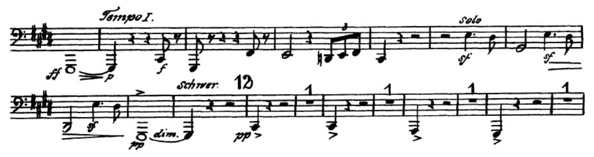
Excerpt 2 - Movement II: 6 measures before [20] to 7 measures after [20]
Tuba
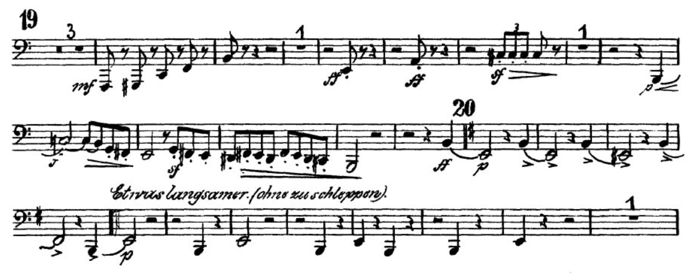
Excerpt 3 - Movement II: 8 measures before [25] to [25]
Tuba
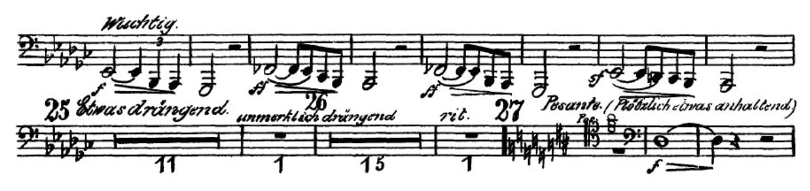
Excerpt 4 - Movement II: 4 measures before end to end
Tuba
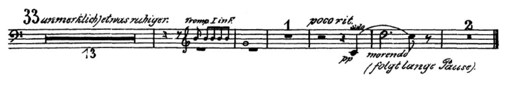
Excerpt 5 - Movement III: 13 measures before [16] to [17]
Tuba
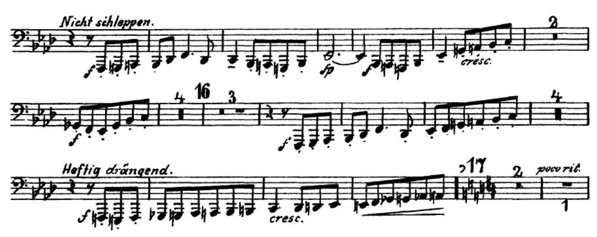
Excerpt 6 - Movement III: [21] to [22]
Tuba
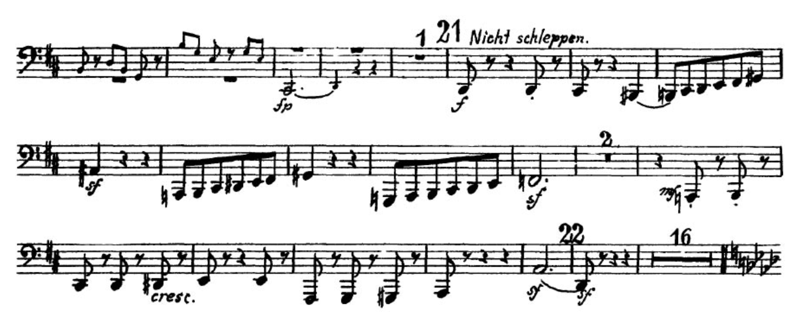
Excerpt 7 - Movement III: Pickup to [25] to [26]
Tuba
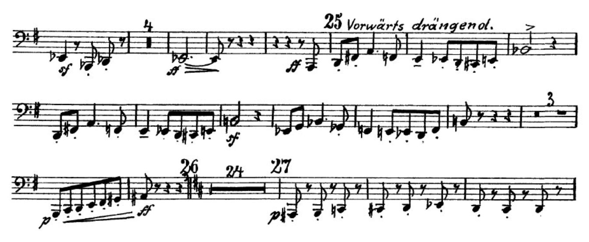
Excerpt 8 - Movement III: 4 measures after [30] to 8 measures after [30]
Tuba
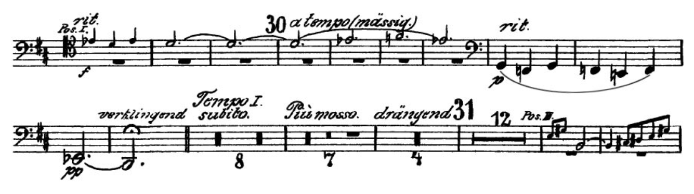
Excerpt 9 - Movement V: 9 measures before [19] to [19]
Tuba
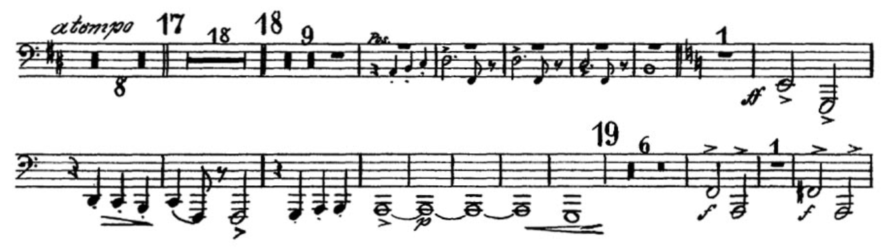
Excerpt 10 - Movement V: 1 measure before [22] to 9 measures before [23]
Tuba
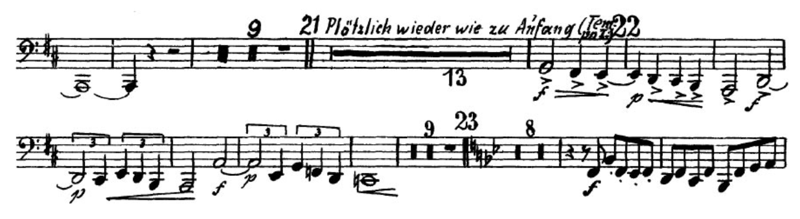
Excerpt 11 - Movement V: 4 measures before [24] to [24]
Tuba
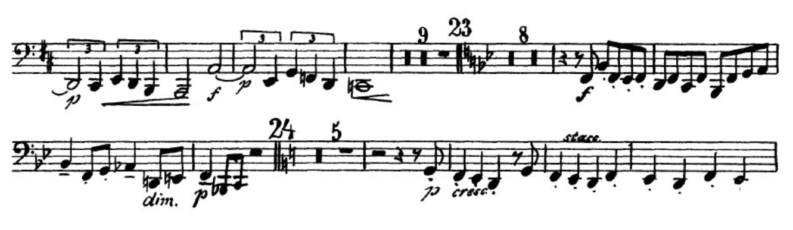